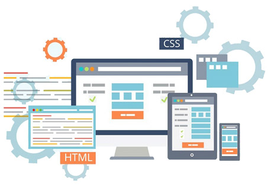

User Interface, also referred to as UI in popular terms, may be specified as the interactive space between machines and humans. The main aim and function of a User Interface is to help in easy and effective control and operation of the machine from the user's end, as well as provide fast and accurate feedback from the machine aiding the operator to make the best operational decisions.
User Interface can be broadly seen as an operating system; the operator controls the process. A basic User Interface will have a means of Input which allows users to manipulate or instruct the system and the Output which allows the system to indicate the effects that the user manipulation has been able to create.
The best User Interface will be easy and efficient and should be enjoyable to operate. They will also need the minimal input process or commands to bring about the most efficient and effective output. We have the most talented and creative programmers and designers in our UI design and development team. While designing User Interfaces, they not only take into account the ergonomics, they also keep in mind the psychology of the end users and design accordingly.
We understand that an easy and understandable User interface makes it easy for the user and also makes the software or application popular too. Our experts use some of the latest User interface design tool to create some of the most attractive, easy operable and efficient user interface for your applications and other needs.
We not only use the latest and most advanced User interface design tools, we also use a combination of these tools to generate some of the easiest operating and cross platform usable user interfaces. They are not only easy to operate, they are also extremely efficient and effective too.
From GUI, to web based user interfaces, to Touch-screens, we design and develop them all. We also develop and design attentive user interface, command line interfaces as well as conversational interface agents and every possible type of user interface. We have some of the experts who uses the user interface design tools to customise the best UIs to meet your needs.
JSTL
A component of Java Enterprise Edition Web application Development platform, the JSTL or JavaServer Pages Standard Tag Library also extends specification. The JSTL extends specification by adding a tag library of JSP tags for common tasks. These tasks may include XML data processing, database access, internationalisation, conditional execution and so on. Developed as JSR or Java Specification request, JSTL was developed under the JCP or Java Community Process. JSTL can embed Java code directly and provide effective ways of embedding logic within a JSP page.
There are basically six JSTL tags for use, which are Core library, i18n-capable formatting library, database tag library, XML library, functions library and the permitted library. The database tag library contains JSTL tags for creating and updating database as well as tags for query, and the TLV or permitted tag library allows validation of XML view of JSP pages in terms of translation-time validation. The authors can also enforce restrictions about use of scripting elements and also permitted tag libraries in JSP pages by the TLVs that are provided by JSTL.
We have a team of highly experienced programmers and developers who use JSTL tag and JSTL reference to design and also develop some of the most efficient web elements. They offer the JSP pages with the best control of flow and also with date/number formatting and internationalisation facilities. They also add utility EL functions. They use the SQL and XML taglibs to execute SQL queries and parsing of XML inside XML pages in declarative manner. We also offer comprehensive web solutions and applications for your business needs.
These applications and other features are designed and developed only after understanding your needs and expectations thoroughly. We also integrate social media pages and web pages to collect data, as well as analyse them for detailed and useful insight. We develop these solutions for cross platform usage and also for stable and reliable services. We offer the most competitive prices and extended technical support and services for all our products.
jQuery
Designed to simplify the client side scripting of HTML, JQuery is a multi browser or cross browser JavaScript library. JQuery is used by a huge number of websites globally and is presently one of the most popular JavaScript Libraries in use these days. Licensed under MIT license, JQuery is a free and open source software.
The design of JQuery makes it easier to navigate documents, develop AJAX applications, create animations and lots more. It also allows developers to create plug-ins on top of the JavaScript library. Creating abstractions for low level interaction and animation by developers as well as theme able advanced and high-level advanced effects by developers is also enabled in JQuery.
Dynamic web pages and web applications can be created using JQuery module approach of the libraries. The fast and small yet feature-rich JavaScript library makes HTML document traversal and manipulation as well as event handling and animation extremely easy to use. APIs can work across a multitude of browsers due to the JQuery functions and JQuery modules. The whole way of programming JavaScript has chaged due to the versatility and extensibility combined in JQuery.
JQuery can also be used with unified and HTML5 based user interface system to build popular mobile device platforms. The flexibility and lightweight codes are used extremely effectively and nicely by our programmers to develop not only stable and strong JQuery and JQuery UI foundation. They also use JQuery table and customise them to display and manage as well as sort data with minimal effort. They also use JQuery tables and JQuery modal themes and customise the uniform look and feel of webpages or websites across all platforms.
They also make sure that applications and other web elements are properly integrated with the web pages and applications. Our talented programmers and developers use JQuery and other softwares to develop the most effective and business or need-focussed applications. We also offer a number of other IT related services and support. We offer the most cost-effective services and offer technical support for an extended period, other than the best-in-class solutions to your needs.
JSON
JSON is the acronym for JavaScript Object Notation. Designed for human readable data exchange, it is a text-based open standard. The JSON was derived for representing simple objects or Associative arrays and simple data structures, and was derived from JavaScript language. Though JSON is based on JavaScript, it is language-independent with parsers that are available for many languages.
The JSON format was specified by Douglas Crockford, which is often used for transmitted structured data and serialising them over a network connection. JSON acts as an alternative to XML and similar applications and is used primarily to transmit data between web application and server.
Though there are a number of free JSON editors available online, we're proud to have a team of extremely talented and experienced developers who design and develop their own JSON Editor. They also have their own customised JSON decoders as well as their own JSON coders. They use and prefer JSON to a huge extent as this is language-independent.
Moreover the data structures, objects and arrays are also universally recognised. Almost all modern programming languages support JSON structures. JSON is considered to be the most ideal format for data interchange over the web by most modern day programmers and web designers and developers.
Our experienced programmers use JSON to create native codes that are reliable and stable. They use Objective C, Java, Python models and a variety of other programming languages to develop the best applications and interfaces. We also offer the most reliable and professional experts who are well qualified JSON developers apart from being AJAX developers too. They deliver the most reliable and flexible solutions as well as stable solutions that fit your architecture framework. They also integrate all these features and use the best JSON editor and JSON decoder to attain the best results.
We offer our world class service, technical support and product support at the most competitive rates. We also offer a basket of all IT related solutions to meet and satisfy your requirements in addition to developing and designing the best custom made applications and softwares for your business needs.
YUI
YUI is the acronym for the Yahoo User interface Library and is an open source JavaScript Library. It is used to build highly interactive web applications as well as build some fascinating and extremely interactive and efficient web applications using Ajax, DOM scripting and DHHML. Available under a BSD license the YUI also uses a number of several core CSS resources. Initially, the project was started by Thomas Sha at Yahoo, and sponsored by Jerry Yang. The principal architects were Adam Moore, Matt Sweeney and Sha, the developers of the YUIL also maintain YUI blog and community and discusses a number of topics.
YUI library is completely documented, and is accompanied with detailed API documentation. All these accompanies library downloads. The YUI core, utilities, controls and the developer tools and build tools along with the CSS Components, make it a complete package. Together they contain all aspects of building, designing and developing some of the most advanced and interactive web pages and web applications.
These applications can be highly interactive and can serve a number of purposes also. The YUI compressor minifies JavaScript and CSS safely. YUI compressor is basically to ensure the operational qualities of the code and reducing the overall byte footprint both in raw terms and after zipping.
We have a team of very efficient and dedicated web developer experts. They not only use YUI and YUI panels and tabs to design and develop some of the most artistic and utility web applications and web pages but also make sure that the pages are developed with the needs and requirements of your business. They always start developing web page or web application after understanding the requirements.
They are some of the most talented web designers and programmers who use YUI compressor and other YUI components like YUI panels and YUI tabs to design some of the most effective and efficient applications and web elements, which can be extremely interactive and user friendly too. We offer a range of other web related services and expertise at a very affordable price. We also offer extended product support and technical assistance.
Microsoft ASP.NET
ASP.NET is designed by Microsoft and it is a server side web application framework. It was designed for web developers and encourage building dynamic web pages. Programmers can build dynamic web sites and web services as well as web applications using the Microsoft ASP.NET framework. The Microsoft ASP.NET is built on CLR or Common Language Runtime. This allows programmers to write ASP.NET codes using any .NET supported language. SOAP messages can also be processed by ASP.Net components due to the Microsoft ASP.NET SOAP extension framework.
Also known as web forms that remain contained within ‘.aspx’ extension files containing static XHTML markup and server side web controls as well as user controls, Microsoft ASP.NET usually forms the main building blocks for application development. Our developers and programmers use the most common web development techniques and the code-behind model to make some of the most inspiring and useful applications.
We have the most talented designers and programmers who can build custom controls for your ASP.NET applications. Using the DLL files, our programmers develop and deploy such custom controls across multiple web applications as well as VB projects.
Using stateless HTTP protocol, ASP.NET applications are accessed and they are hosted by a web server. For stateful interaction, the application has to implement state management on its own. The sessions state and other finer details of the Microsoft ASP.NET applications are fine tuned and customised by the programmers as per the need of the pages and business as a whole. We offer a number of other customised applications and web upgradations that you can also use in your .NET Web Host server integrating seamlessly.
We also offer web server services and our servers support the latest web stack from Microsoft. We have .NET Web hosting services along with other services and we offer the most competitive prices as your .NET web Host, or any other web host. We offer control panel, huge storage space, extended bandwidth and also site lock for securing your business site. We also offer comprehensive IT solutions tailor made for you.
AJAX
Ajax is the acronym for Asynchronous JavaScript and XML. Actually Ajax can be best described as a group of interrelated web development techniques, to create asynchronous web applications on the client side. Using Ajax, a server can asynchronously send and retrieve data through a web application without affecting the display and behaviour of the existing page. HTML and CSS can be used in combination to mark-up and style information as Ajax is a group of technologies.
Ajax programming or Ajax Application can be used to exchange small amount of data or information behind the scene. This helps applications and the pages to run fast and efficient without affecting the speed or the page to pause. Ajax applications keep saving small amount of data while running and hence data loss is minimal when interrupted, or it becomes easy to save a huge amount of data.
We have a team of extremely talented and creative programmers. They excel in programming extremely useful and effective applications that are beneficial and offer a lot of utility. They use a number of programming platforms including Ajax programming to develop these applications which work on cross platforms also. They also design some of the most useful, efficient and effective utility and useful Ajax applications along with other apps also.
The Ajax applications designed and built by the expert team of developers are richer and better looking web apps and also behave like desktop applications. The applications are highly responsive and extremely useful. They can be and are embedded in webpages and other forms for best use and results. We design and develop some of the most exciting and artistic login forms, voting and rating forms, form submission and validating services, customised chat rooms or Instant messaging applications, lightboxes, and external widgets.
We develop customised User Interface which are slicker and forms and services to update user content using Ajax programming. We also have designed and developed excellent job sites and other kinds of customised sites using Ajax programming and also developed specific Ajax applications to meet your requirement. We also offer technical support and top notch services for all your IT-related needs at the most affordable prices.
Copyright © 2016 Mgainz Communication Pvt Ltd. - All Rights Reserved.
 +91 124 670 7927
+91 124 670 7927 support@mgainz.com
support@mgainz.com